5040A20 air conditioner compressor - r+r - includes fluid level check and top up if necessary
- Path
- Procedures > 50 AUXILIARY UNITS > 5040 AIR CONDITIONING CASING AND COMPONENTS > 5040A air conditioner coolant circuit > 5040A20 air conditioner compressor - r+r - includes fluid level check and top up if necessary
- Kind
- repair procedure (removal / refitting; the operation number is the code)
- Applies to
- all engines; all production periods
- Interactive page
- https://sloeber94.github.io/elrnDB-fPnd/en/#/2752877
Applies to: engines: 1.1, 1.2 8v; all production periods
 Removing
Removing
 Refitting
RefittingDisconnect the battery negative terminal.
1. Release the air hose from the cold air intake.
2. Undo the fixing bolts (2a) and release the fastening clip (2b).
3. Remove the air filter casing complete with hose.
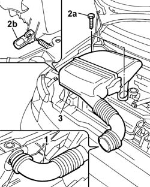
Applies to: engines: 1.3 JTD 16v; all production periods
Removing
RefittingRemove the car from the ramps.
Disconnect the battery negative terminal.
0010T84 coolant for air conditioning system dehydrate and recharge
1. Undo the fixing nut (1a) and the fixing bolts (1b) and move the wheel arch liner (1c) aside.
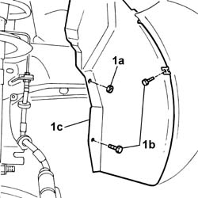
Applies to: engines: 1.1, 1.2 8v; all production periods
Raise the car.
1. Undo the fixing nut (1a) and the fixing bolts (1b) and move the wheel arch liner (1c) aside.
Applies to: engines: 1.3 JTD 16v; all production periods
1. Undo the fixing bolts (1a) and remove the timing dust guard (1b).
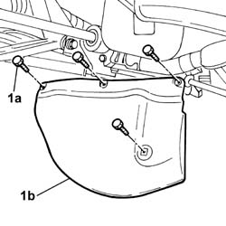
Applies to: engines: 1.1, 1.2 8v; all production periods
1. Undo the fixing bolts (1a) and remove the timing dust guard (1b).
Applies to: engines: 1.3 JTD 16v; all production periods
1092G11 Engine components single drive BELT - R.R. for versions with air conditioning
1. Disconnect the electrical connection from the air conditioning compressor engagement electromagnet.
 | Name | Connector |
|---|---|---|
1 | Air conditioning compressor engagement solenoid | L20 |
2. Undo bolt (2a) and disconnect the pipe from the air conditioning compressor to the condenser (2b).
3. Undo the bolt (3a) and disconnect the pipe from the expansion vavle to the compressor (3b).
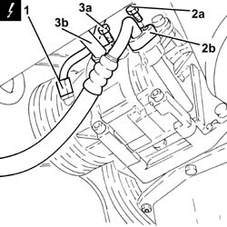
Applies to: engines: 1.1, 1.2 8v; all production periods
1. Work on themoving tensioner (1a) and release the various components drive belt (1b) and remove it.
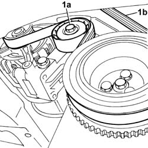
Applies to: engines: 1.3 JTD 16v; all production periods
1. Undo the bolts (1a) and remove the air conditioning compressor (1b).
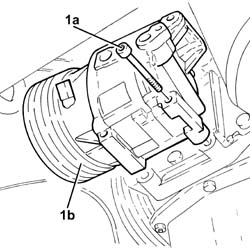
Applies to: engines: 1.1, 1.2 8v; all production periods
Lower the vehicle.
1. Undo the fixing bolts (1a) and disconnect the rigid compressor pipes (1b).
2. Disconnect the electrical connection for the compressor electromagnet.
| Name | Connector |
|---|---|---|
2 | Air conditioning compressor engagement solenoid | L20 |
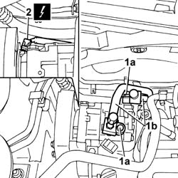
Applies to: engines: 1.3 JTD 16v; all production periods
Refitting
Removing1. Fit the air conditioning compressor (1a) in place and tighten the bolts (1b) to the recommended torque.
 | Fastening | Component | Ø | Value (daNm) |
|---|---|---|---|---|
1b | Bolt | AIR CONDITIONER ASSEMBLY COMPRESSOR | M8 | (Support side) 2.3 ÷ 2.8 |
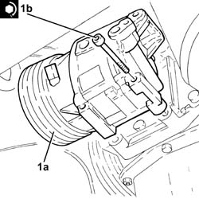
Applies to: engines: 1.1, 1.2 8v; all production periods
1. Undo the fixing bolts (1a) and remove the compressor belt guard 91b).
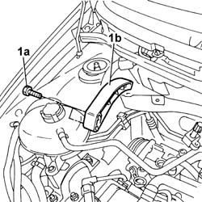
Applies to: engines: 1.3 JTD 16v; all production periods
1. Connect the pipe from the evaporator pipe connector to the compressor (1a), compressor side and fix it tightening the bolt (1b) to the recommended torque.
| Fastening | Component | Ø | Value (daNm) |
|---|---|---|---|---|
1b | Nut | EXPANSION VALVE.COMPRESSOR PIPE/ A(C..) | M6 | (Compressor side) 0.7 ÷ 1.1 |
2. Connect the pipes from the air conditioning compressor to the condenser (2a), compressor side and secure them tightening the bolt (2b) to the recommended torque.
| Fastening | Component | Ø | Value (daNm) |
|---|---|---|---|---|
2b | Bolt | PIPES FROM COMPRESSOR TO CONDENSOR | M6 | (Compressor side) 0.7 ÷ 1.1 |
3. Connect the electrical connection to the air conditioner compressor electromagnet.
| Name | Connector |
|---|---|---|
3 | Air conditioning compressor engagement solenoid | L20 |
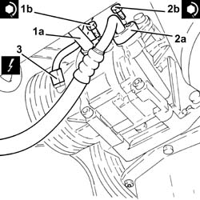
Applies to: engines: 1.1, 1.2 8v; all production periods
1. Undo the fixing bolts (1a) and remove the air conditioning compressor (1b).
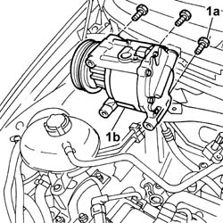
Applies to: engines: 1.3 JTD 16v; all production periods
1092G11 Engine components single drive BELT - R.R. for versions with air conditioning .
Fit the timing gear dust guard and tighten the fixing bolts.
Tighten the wheel arch liner bolts.
4450B04 right front wheel r r .
0010T84 coolant for air conditioning system dehydrate and recharge .
Connect the battery negative terminal.
Remove the vehicle from the ramp.
Applies to: engines: 1.1, 1.2 8v; all production periods
Refitting
RemovingFit the air conditioning compressor in place and tighten the fixing bolts to the recommended torque.
| Fastening | Component | Ø | Value (daNm) |
|---|---|---|---|---|
- | Bolt | AIR CONDITIONER ASSEMBLY COMPRESSOR | - | (To support) 5 |
Fit the belt guard on the air conditioning compressor and tighten the fixing bolts.
Connect the electrical connection to the air conditioning compressor.
| Name | Connector |
|---|---|---|
- | Air conditioning compressor engagement solenoid | L20 |
Connect the rigid air conditioning pipes to the compressor and tighten the fixing bolts to the recommended torque.
| Fastening | Component | Ø | Value (daNm) |
|---|---|---|---|---|
- | Bolt | COMPRESSOR PIPE CONNECTORS | M6 | 0,9 |
Raise the car.
Fit the various components drive belt in place on the moving tensioner.
Fit the timing gear dust guard and tighten the fixing bolts.
Tighten the bolts fixing the right wheel arch.
Lower the vehicle.
0010T84 coolant for air conditioning system dehydrate and recharge
Fit the air filter complete with cold air intake hose in place and tighten the fixing bolts.
Connect the battery negative terminal.
Topics linked from this page (3)
- 0010T84 coolant for air conditioning system dehydrate and recharge
- 1092G11 Engine components single drive BELT - R.R. for versions with air conditioning
- 4450B04 right front wheel r r
Topics that link to this page (6)
- S50 CLIMATE CONTROL SYSTEM NOISY' / (IN THE ENGINE COMPARTMENT)
- 1004B12 power unit with manual gearbox - r+r for versions with a/c
- 1004B13 POWER UNIT WITH MECHANIC TRANSMISSION - R.R. FOR MODELS WITH AIR-CONDITIONER AND FOUR-WHEEL DRIVE
- 1016C11 SINGLE CYLINDER HEAD-R R GASKET FOR VERSIONS WITH AIR CONDITIONER
- 1028H21 piston with connecting rod - r r
- 5040A26 compressor mount - r r